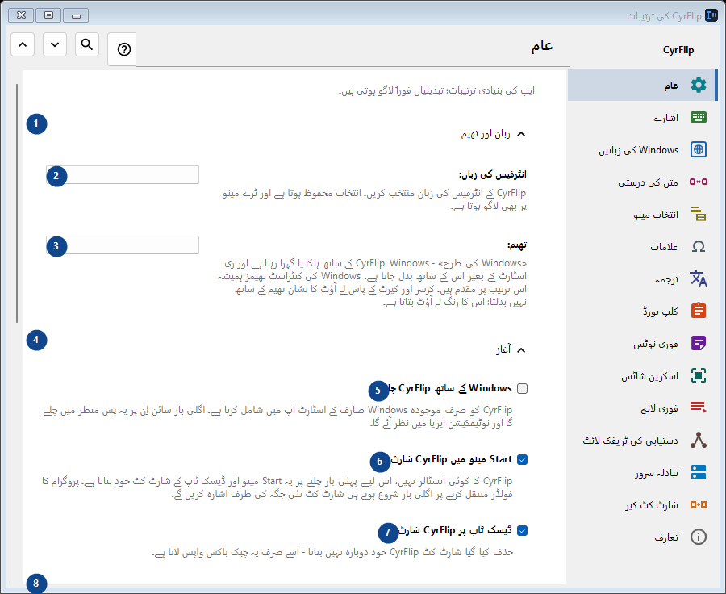
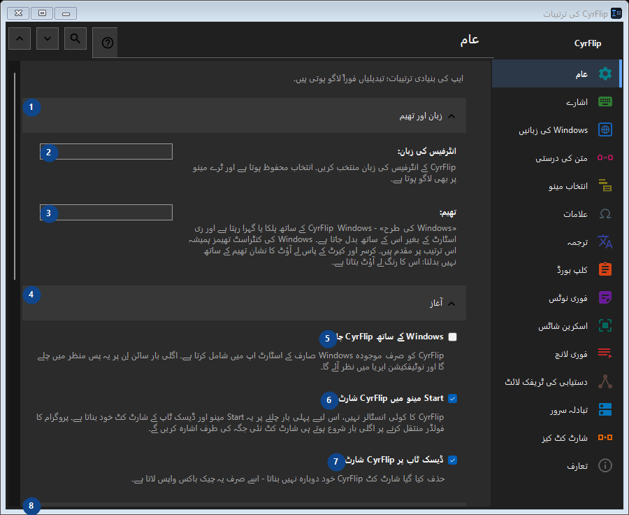

عام
مقصد
ایپ کی بنیادی ترتیبات؛ تبدیلیاں فوراً لاگو ہوتی ہیں۔


استعمال کی ترتیب
ترتیبات فوراً لاگو ہوتی ہیں۔ کوئی لازمی ترتیب نہیں؛ نیچے کے گروپ استعمال کریں۔
عناصر
1. زبان اور تھیم
درج شدہ کارروائی کے لیے یہ حکم استعمال کریں۔ قبول کرنے سے پہلے تصدیق پڑھیں۔
آپ کے شارٹ کٹ2. انٹرفیس کی زبان
ساتھ کے لیبل کے مطابق قدر منتخب یا درج کریں۔ آگے بڑھنے سے پہلے جانچیں۔
آپ کے شارٹ کٹ3. تھیم
ساتھ کے لیبل کے مطابق قدر منتخب یا درج کریں۔ آگے بڑھنے سے پہلے جانچیں۔
آپ کے شارٹ کٹ4. آغاز
درج شدہ کارروائی کے لیے یہ حکم استعمال کریں۔ قبول کرنے سے پہلے تصدیق پڑھیں۔
آپ کے شارٹ کٹ5. Windows کے ساتھ CyrFlip چلائیں
CyrFlip کو صرف موجودہ Windows صارف کے اسٹارٹ اپ میں شامل کرتا ہے۔ اگلی بار سائن اِن پر یہ پس منظر میں چلے گا اور نوٹیفکیشن ایریا میں نظر آئے گا۔
آپ کے شارٹ کٹ6. Start مینو میں CyrFlip شارٹ کٹ
CyrFlip کا کوئی انسٹالر نہیں، اس لیے پہلی بار چلنے پر یہ Start مینو اور ڈیسک ٹاپ کے شارٹ کٹ خود بناتا ہے۔ پروگرام کا فولڈر منتقل کرنے پر اگلی بار شروع ہوتے ہی شارٹ کٹ نئی جگہ کی طرف اشارہ کریں گے۔
آپ کے شارٹ کٹ7. ڈیسک ٹاپ پر CyrFlip شارٹ کٹ
حذف کیا گیا شارٹ کٹ CyrFlip خود دوبارہ نہیں بناتا - اسے صرف یہ چیک باکس واپس لاتا ہے۔
آپ کے شارٹ کٹ8. پاور اور اسکرین
درج شدہ کارروائی کے لیے یہ حکم استعمال کریں۔ قبول کرنے سے پہلے تصدیق پڑھیں۔
آپ کے شارٹ کٹ9. کمپیوٹر کو سلیپ میں نہ جانے دیں
جب تک آن ہے، بے عملی پر Windows سلیپ یا ہائبرنیٹ نہیں ہوگا — لمبے ڈاؤن لوڈ، کاپی یا رینڈر کے لیے مفید۔ حالت محفوظ ہوتی ہے: آن چھوڑا گیا سوئچ دوبارہ چلانے کے بعد بھی کمپیوٹر کو جاگتا رکھے گا - CyrFlip آپ کی بیٹری کی نگرانی نہیں کرے گا۔
آپ کے شارٹ کٹ10. اسکرین آن رکھیں (ویڈیو کی طرح)
بے عملی پر اسکرین بند یا لاک نہیں ہوتی، بالکل ویڈیو دیکھنے کی طرح۔ یہ پاس ورڈ لاک (Win+L یا سیکیورٹی پالیسی) کو منسوخ نہیں کرتا۔ حالت محفوظ ہوتی ہے: آن چھوڑا گیا سوئچ دوبارہ چلانے کے بعد بھی اسکرین آن رکھے گا۔
آپ کے شارٹ کٹ11. ترتیبات کی منتقلی
درج شدہ کارروائی کے لیے یہ حکم استعمال کریں۔ قبول کرنے سے پہلے تصدیق پڑھیں۔
آپ کے شارٹ کٹ12. ترتیبات برآمد کریں...
درج شدہ کارروائی کے لیے یہ حکم استعمال کریں۔ قبول کرنے سے پہلے تصدیق پڑھیں۔
آپ کے شارٹ کٹ13. ترتیبات درآمد کریں...
درج شدہ کارروائی کے لیے یہ حکم استعمال کریں۔ قبول کرنے سے پہلے تصدیق پڑھیں۔
آپ کے شارٹ کٹ14. درآمد سے پہلے کی ترتیبات بحال کریں...
ابھی بحال کرنے کو کچھ نہیں: CyrFlip پہلی تبدیلی سے عین پہلے اصل حالت محفوظ کرتا ہے۔ یہ عنصر ابھی دستیاب نہیں۔ پہلے خصوصیت فعال کریں یا اندراج منتخب کریں۔
آپ کے شارٹ کٹ15. ترتیبات کا بیک اپ Documents میں رکھیں
جب تک فعال ہے، CyrFlip ہر ترتیب کا رولنگ بیک اپ Documents\CyrFlip\Backups میں رکھتا ہے - تین نئے ترین محفوظ رہتے ہیں۔ بیک اپ Microsoft Store سے دوبارہ انسٹال میں بچا رہتا ہے: نئی انسٹال اسے ڈھونڈ کر بحال کرنے کی پیشکش کرتی ہے۔ فائل میں آپ کے ہوسٹس، سائٹس اور منظرنامے ہیں - اسے نجی رکھیں۔
آپ کے شارٹ کٹ16. بیک اپ فولڈر کھولیں
بیک اپس عام ترتیبات فائلیں ہیں، تاریخ سے نامزد۔ کسی ایک کو کاپی کرنے یا دوسرے کمپیوٹر پر لے جانے کے لیے فولڈر کھولیں۔
آپ کے شارٹ کٹ